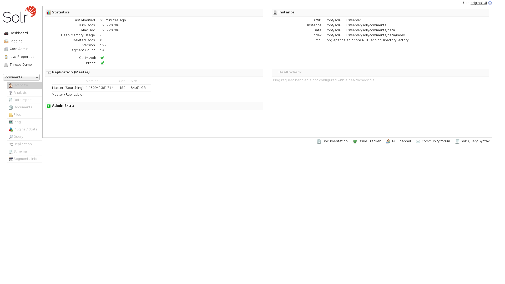
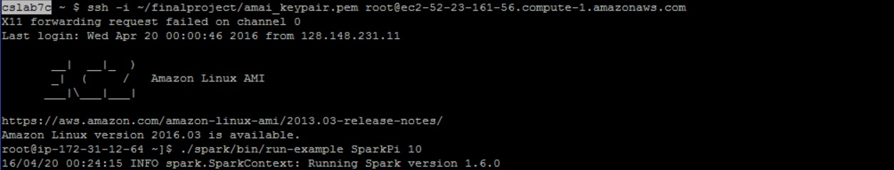
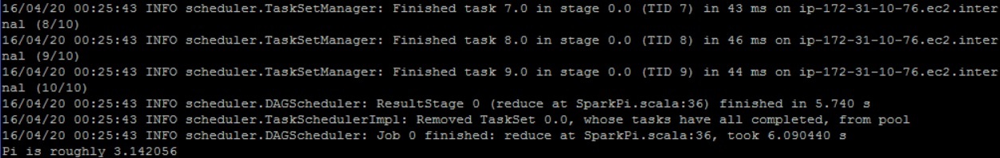
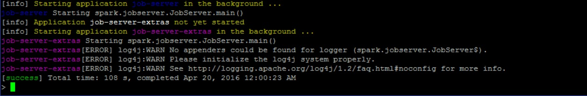
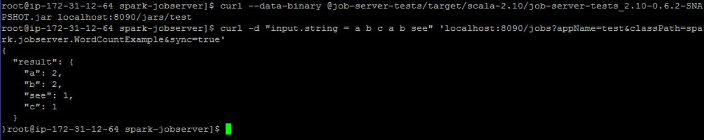

Members
The members of this group are mjzhu, bp12, eh49, and amai.
What We Did This Week
Solr
We have managed to set up Solr on an AWS node and are in the process of inputting as much Reddit comments data into it as we can. The unfortunate part is that importing data into Solr is fairly slow, so we have to wait a while before we can import the entire dataset. Luckily, Solr is able to index imported data on the fly, so we can still work with the data we have in Solr so far. As of writing, we have sucessfully imported about 50 GB of data into Solr, which is around 1/3 of our total data. I have included a screenshot of the admin panel for our Solr instance.

We are also able to write queries to the Solr API; accessing the API is extremely simple, it is basically a get request to the web address of the Solr server. We did run into a bit of trouble with Solr however. First, I had a lot of trouble figuring out how to set up predefined schemas in Solr when I was working on Solr 5, as I had to make a bunch of GET requests in order to update the schema. However, luckily, Solr 6 allows users to easily modify the schema through the web interface. This was important because Solr defaults to multivalued attributes; while this might be fine for some applications, it doesn't allow the results to be sorted, which is something we may want (sorting results by votes).
Another bit of trouble we ran into was figuring out how to increase the JVM heap space for Solr. We need this because the default 512Mb is not enough for uploading large documents; however, even though the Solr documentation mentions that people might want to increase the heap size, they give NO explicit instructions on how to do so. It took hours of searching to finally find some obscure formum thread that mentions modifying the run scripts of Solr.
As for what still needs to be done with Solr, there isn't much else. We just have to wait patiently for the remainder of the data to be uploaded. I wrote some scripts that semi-automate the process so I can work on other things in the meantime.
We have started setting up some pieces of the front end. We are using Flask for our web server, and are in the process of setting up an AWS instance to host our site.
Spark
We are still in the process of setting up the Spark infrastructure that will allow us to run ad-hoc Spark jobs on the fly. So far, we have set up a Spark cluster on EC2 using Spark's EC2 launch script and have verified that it works by running some examples. Below are pictures of ssh-ing into our cluster and running the SparkPi example on the cluster.


Additionally, we have set up the
spark-jobserver, which will allow us to make REST calls to a server to start Spark jobs and return results. Below are pictures of starting the job server, uploading a word count example jar onto the job server, then telling the job server to run the word count example.


Reading Level
In analyzing the reading level of the Reddit comments, we will be using the Flesch-Kincaid readability tests, and in particular we will be analyzing the grade level through the Flesch-Kincaid grade level, as defined by the following equation,
0.39*\frac{a}{b}+11.8*\frac{c}{a}-11.59
where
a = \mbox{total words}, b = \mbox{total sentences}, c = \mbox{total syllables}